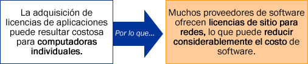
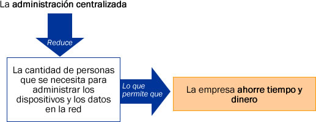

Beneficios de las Redes (Networking)
Los beneficios de la conexión en red de computadoras son muchos, para conocer los más importantes.
(Revisar información de cada recuadro. Para desplegar la información de un tema, seleccionar el recuadro correspondiente.)
Cada computadora en la red no necesita su propia impresora, escáner o dispositivo de copia de seguridad. Es posible configurar varias impresoras en una ubicación central y compartirlas entre los usuarios de la red.
Todos los usuarios de la red envían los trabajos de impresión a un servidor de impresión central que administra las solicitudes de impresión. El servidor de impresión puede distribuir los trabajos de impresión entre las diversas impresoras o puede colocar en cola los trabajos que precisan una impresora determinada.

Las redes ofrecen diversas herramientas de colaboración que pueden utilizarse para establecer comunicaciones entre los usuarios de la red.
Las herramientas de colaboración en línea incluyen:
- Correo electrónico.
- Foros.
- Chat de voz y vídeo.
- Mensajería instantánea.
Con estas herramientas, los usuarios pueden comunicarse con amigos, familiares y colegas.
Un servidor administra los recursos de la red.
Consideraciones importantes:
- Los servidores almacenan los datos y los comparten con los usuarios de una red.
- Los datos confidenciales o importantes se pueden proteger y se pueden compartir con los usuarios que tienen permiso para acceder a dichos datos.
- Se puede utilizar un software de seguimiento de documentos a fin de evitar que los usuarios sobrescriban o modifiquen archivos a los que otros usuarios están accediendo al mismo tiempo.

La licencia de sitio permite que un grupo de personas o toda una organizaciónutilicen la aplicación por una tarifa única.

Los usuarios individuales de la red no necesitan administrar sus propios datos y dispositivos.
Un administrador puede controlar los datos, dispositivos y permisos de los usuarios de la red. La creación de copias de seguridad de los datos resulta más sencilla ya que los datos se almacenan en una ubicación central.
Es posible distribuir el procesamiento de datos entre muchas computadoras para evitar que una computadora se sobrecargue con tareas de procesamiento.